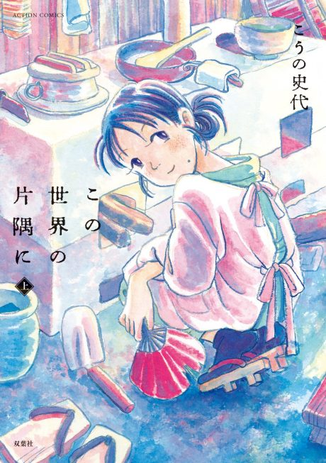

Anime
Anime
Manga2016 · Drama, Slice of Life
In This Corner of the World
この世界の片隅に
AniList8.1
Animeter—
Movie1 ep
MangaFilm
Anime finished. Where does the manga pick up?
StatusNo source yet
We looked for where the anime ends in the manga but found no source we trust yet. The manga is 48 chapters, finished.